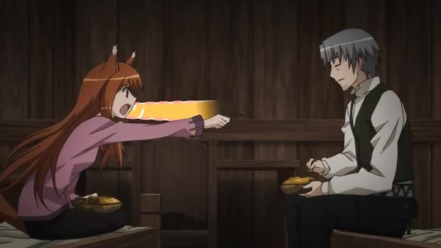

"Spice and Wolf"'s first episode showcases the main heroine, a wolf goddess, rising naked from a cart full of animal furs. Her wolf ears prick up and her beautiful wolf tail glistens in the moonlight, as she playfully asks the nearby merchant if he has any "alcohol." This episode gives most people the impression that this is another furry-fetish porno, to add to the excess hentai that somehow finds its way outside of Japan. I admit, being a teenager at the time and just getting into anime, the description of the first episode encouraged me to give the show a chance. But it's not porn! I swear! Let me explain... The show follows Lawrence, a simple traveling merchant in medieval Europe, who happens to pass by an town he's familiar with. The town is celebrating a harvest festival, where they give thanks to the wolf goddess who oversees their fields. To his surprise, he finds this goddess, named Holo, naked in his cart, her tail glistening in the moonlight, who explains that she wishes for his help to return to where she was born, seeing that the town doesn't appreciate her as they used to. Reluctantly, he agrees, and they set off to the forest in the north where Holo lived. The show is separated into arcs, each six episodes long, where they try to survive or profit from town to town. Part of what may surprise you is how the merchant's lifestyle is depicted here. For the most part, it is quite realistic. Lawrence, and therefore Holo, have to work hard selling their goods and bargaining with other merchants to make enough money for food, drink and shelter. In each episode, Lawrence teaches different strategies to Holo, and sometimes Holo surprises him with her own ideas. The show talks about different currencies and goods, and how and why they change in value. Much of the plot in the show revolves around business, which seems somewhat boring. And honestly, it is. The later episodes especially are a bit far-fetched, and seem to make a huge dramatic ordeal over little things like selling fool's gold. But most of the time, it's incredible how interesting this show makes business concepts seem, and how most of it actually makes sense. You may feel like you can run circles around business students after watching this show. Of course, I don't know if anything here is practical, but it's impressive that it makes you believe that it might be. Another unique standout is the sense of place. The medieval European setting is rare to see in anime, and it is portrayed here in a way that you don't see very often. Little details in the streets and the buildings, as well as the clothing and the festivals, all come together to make it appear alive. Religons grow and adapt, replacing old traditions, requiring Holo's presence as a pagan God to be hidden from Church officials during their travels. I honestly wish we had more shows with such detail to their setting as this. The obvious draw is that this is a romance show through and through, using the relationship between Holo and Lawrence. Thankfully, they are both very likeable. Holo comes across and flirtatious and confident, and occasionally wise beyond her years, but also vulnerable when the story calls for it. Lawrence, unlike most leading men, is actually pretty bright, and his maturity is refreshing, although even he finds himself from trouble from time to time. They do take their sweet time with their relationship, however. It's clear they have feelings for each other in the middle of season one, but neither one of them confesses any feelings until the very last episode. Also, they don't actually find the forest in the north by the end of season two, which feels unfinished. But not unsatisfactory: despite me wanting more, I felt that the series actually ended very well. I didn't think about what it was missing, but about what it left me on, and I was content with where it left our characters, knowing they would be alright. Animation and visuals look good throughout the show, although the characters do seem a little stiff at times. Music is a atmospheric highlight, if you don't include the annoying first ending song in terrible Engrish. And about the fanservice elements: apart from the first two episodes, Holo remains fully clothed. Also, her character design thankfully has small breasts without nipples, and her appearance somehow feels appropriate for a wolf god. So I will ask you kindly to stop talking about the fanservice elements of this show, as sexual scenes are few and far between, and anyone looking for that may be disappointed. But also impressed with the show on its own merits.Regarding the dub: I've heard fans exclaim the Japanese dub is significantly better, to which I am quite puzzled. The Japanese dub makes Lawrence and Holo both sound younger than they are supposed to be (they sound like cute high-school students), wherein the English dub makes them sound older than they are supposed to be (like mature mid/late-20's adults). I guess it's up to personal taste, but given the content of the story and the personality of the characters, I very strongly recommend the English dub. Personally, it is one of my favorite dubs to this day.I was fully prepared to not get invested, but found "Spice and Wolf" surprisingly satisfying as one of my favourite romance shows to date. That the romantic relationship is only part of what makes the show so successful also signifies why it deserves praise, and it remains one of the smartest anime I've seen. If you had any consideration about looking this show up, I whole-heartedly recommend it.
- "Ani" More reviews can be found at : https://2danicritic.github.io/ Previous review: review_Speed_Grapher Next review: review_Spirit_-_Stallion_of_the_Cimarron